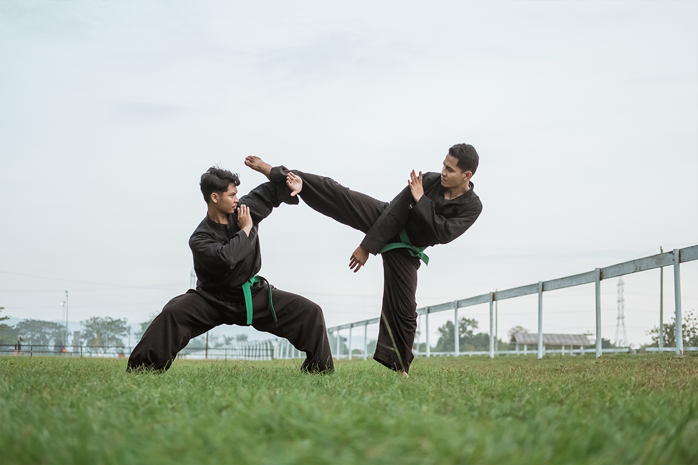
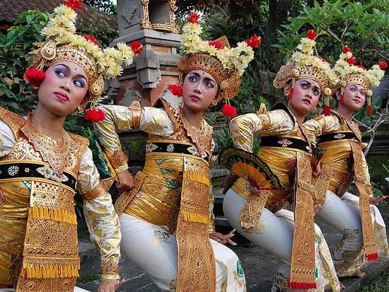
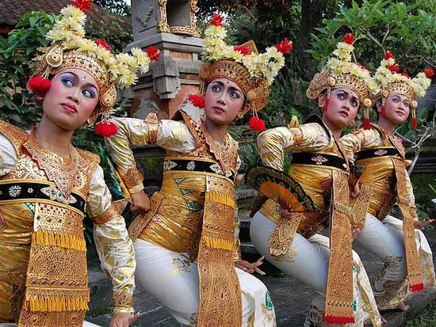

Penak Silat

Pencak Silat is a form of traditional martial art which originated in the Malay region part of Indonesia (Sumatra and Java) and then spread across the archipelago.
Topeng is known as a mask dance that brings life to the Balinese language, while chronicling the island’s history or social issues in a comical way.
 

A vital part of Balinese culture, Balinese traditional dance is often associated with religious ceremony. However, since the 1950s, with the rapid development of tourism, several dances have been displayed on activities outside of religious events with several modifications.
Pencak Silat is a form of traditional martial art which originated in the Malay region part of Indonesia (Sumatra and Java) and then spread across the archipelago.